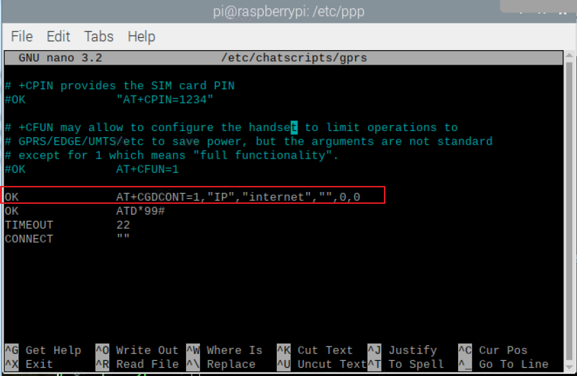
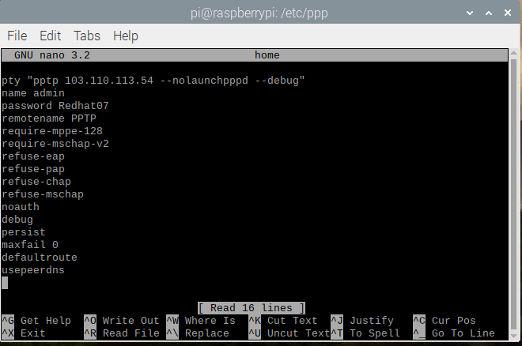
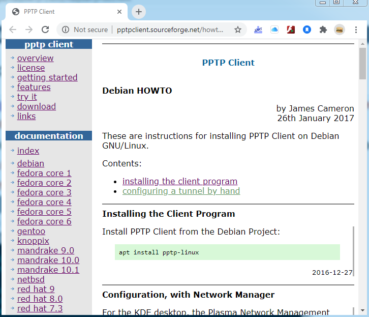

Docs came from
https://www.rhydolabz.com/wiki/?p=16325 , Downloaded in
/drive.google/RaspberryPi/GSM _ GPRS Modem (SIM900_SIM800).pdf .
There is an error in this document. The Serial Port will be enable and Serial Console will be disable.
Also need to edit
/etc/chatscripts/gprs file.
I had to modify
/etc/chatscripts/gprs file to add "internet" as apn name as follows.

After config as above docs, use command
sudo pon rnet. Because
rnet is a identity script for ppp connection in
/etc/ppp/peers/rnet . To edit or create a new script you must
cd /etc/ppp then
sudo su then
cd peers and create or edit a config file. see rnet few lines below.
Another config file/etc/ppp/peers/home To connect with my home PPTP VPN

Also downloaded some examples at
drive.google\RaspberryPi\ppp-example\ which is not seems helpful.
I did run wvdial as instructed from
This Site.
But even after connected ppp0 interface does not appear in the interface list
ifconfig list. Config Files :
1./etc/wvdial.conf
noauth
name wvdial
usepeerdns
defaultroute
replacedefaultroute
2./etc/ppp/peers/wvdial
3.rnet
#internet is the apn for idea connection
connect "/usr/sbin/chat -v -f /etc/chatscripts/gprs -T internet"
# For Raspberry Pi3 use /dev/ttyS0 as the communication port:
/dev/ttyS0
# Baudrate
9600
# Assumes that your IP address is allocated dynamically by the ISP.
noipdefault
# Try to get the name server addresses from the ISP.
usepeerdns
# Use this connection as the default route to the internet.
defaultroute
# Makes PPPD "dial again" when the connection is lost.
#persist
# Do not ask the remote to authenticate.
noauth
# No hardware flow control on the serial link with GSM Modem
nocrtscts
# No modem control lines with GSM Modem
local
Trying to route all traffiq through ppp0 when ppp0 exist. Example of script to extract IP address of specific interface and check if
exist. This script could be more efficiently handled. First check if ppp0 exist.
IP=$(ifconfig ppp0 | grep inet | cut -d: -f2 |awk '{print $2}') #IP assigned post connected to ppp0 VPN
if [[ $IP == *"Device not found"* ]]; then
echo "Modem Not Connected"
else
echo $IP
fi
Another link from
sourceforgenet has pptp tunnel example::
PPTP CLIENT.
